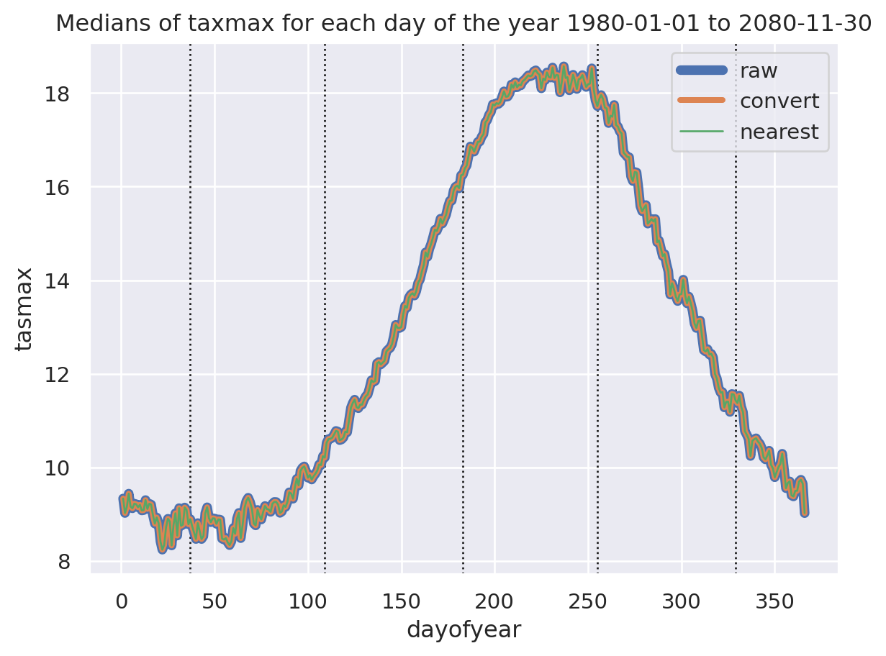

Figure 4: Compare CPM 360 vs projected standard leap year December
Average annual projections.
Code
annual_raw_means: T_Dataset = annual_group_xr_time_series( cpm_medians['raw']['tasmax', '01'].tasmax, variable_name=VariableOptions.TASMAX, plot_path=None, time_stamp=None)annual_convert_linear_means: T_Dataset = annual_group_xr_time_series( cpm_medians['linear']['tasmax', '01'].tasmax, variable_name=VariableOptions.TASMAX, plot_path=None, time_stamp=None)annual_convert_nearest_means: T_Dataset = annual_group_xr_time_series( cpm_medians['nearest']['tasmax', '01'].tasmax, variable_name=VariableOptions.TASMAX, plot_path=None, time_stamp=None)annual_raw_means.plot(label='raw', linewidth=5)annual_convert_linear_means.plot(label='convert', linewidth=3)annual_convert_nearest_means.plot(label='nearest', linewidth=.5)plot_axvlines(plt, gap_360_days(is_leap_year=False))plt.title("Means of taxmax for each day of the year 1980-01-01 to 2080-11-30")plt.legend()plt.show()

Figure 5: Annual average of means of raw tasmax CPM 360 day years
For more detailed analysis comparing nearest and linear interpolation see: